Nitpick
Reading every sign in a 360 photo
A 360 camera sees every sign on the street at once. Show a computer the whole picture and it sees none of them: the photo gets shrunk until the letters are dust. Nitpick has the Mac read first, and hands the model only the pieces it could not settle, at full size.

NaNI ride. The camera shoots every two seconds.
BeerThe Mac reads first. The model only squints where it has to.
Look around
Drag the picture. This is one of the 12 frames, 23 Sep 2026, Mahidol Road near the airport, straightened and with faces pixelated. The rider is NaN.
Shrunk to dust
The camera makes a sphere 7,680 pixels around: about 21 pixels for every degree. A model reads a picture about 1,568 pixels across, so a whole sphere reaches it at 4.4 pixels a degree. Here is one sign both ways.
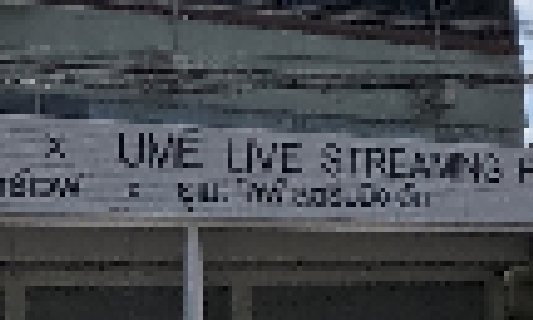
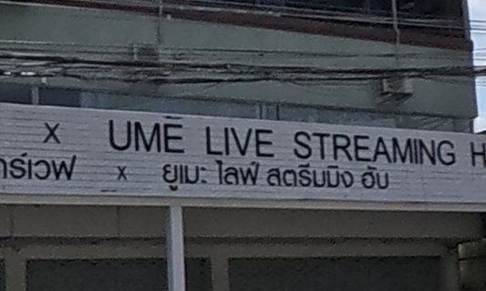
Six steps, five on the Mac
Level
A camera on a motorbike leans. The Mac finds the straight edges (poles, walls, window frames), works out which way is up, and turns the sphere upright, so every later cut stands straight. The camera leaned 44.1° in this frame.
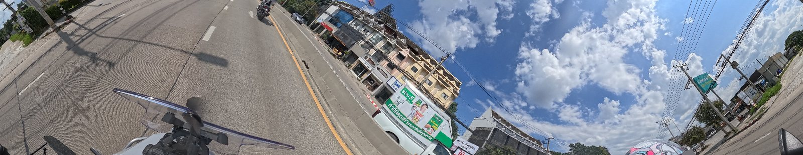
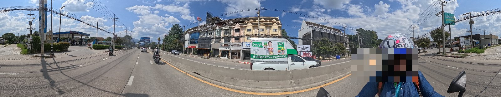
Tiles
Each sphere is cut into 24 views: eight directions, three heights, each 50° wide and 30° tall at full camera size. Small signs stay the size they were shot.
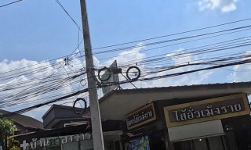
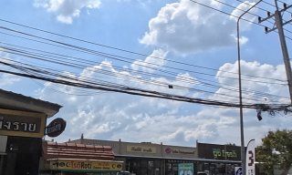
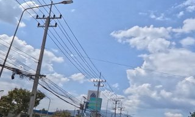
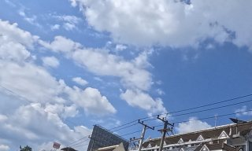
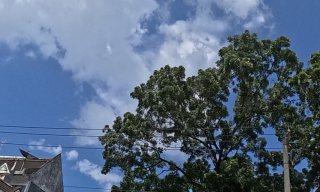
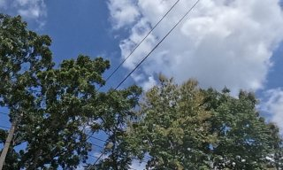
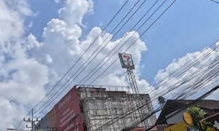
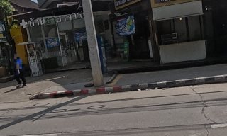
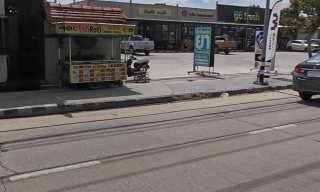
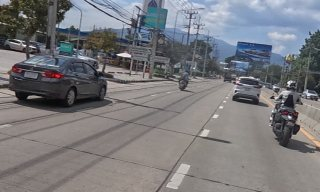
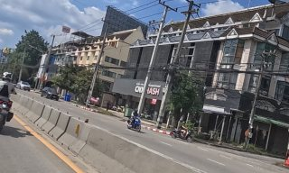
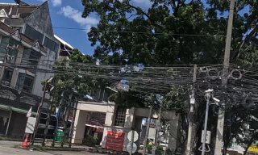
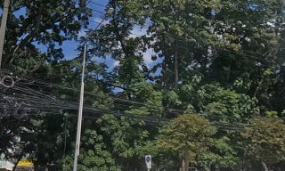
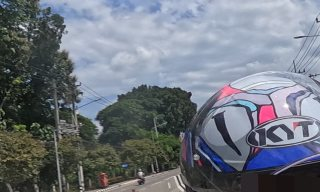
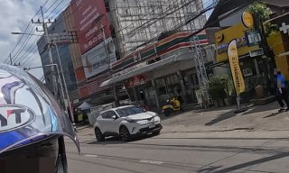
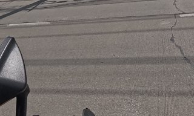
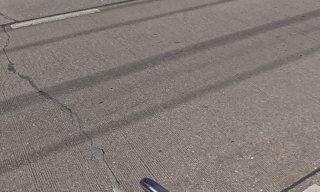
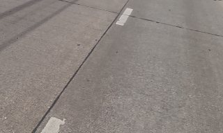
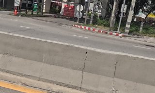
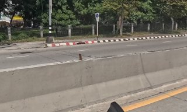
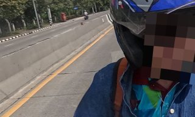
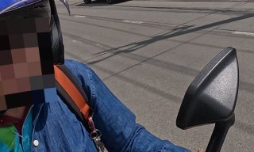
The Mac reads
Apple Vision, on the Mac itself, reads Thai and English on every tile, finds faces (pixelated before any picture leaves the machine) and names the scene: mural, lantern, parked motorbikes. 288 tiles, 359 pieces of text on this set. Green = sure, orange = likely, red = a guess.
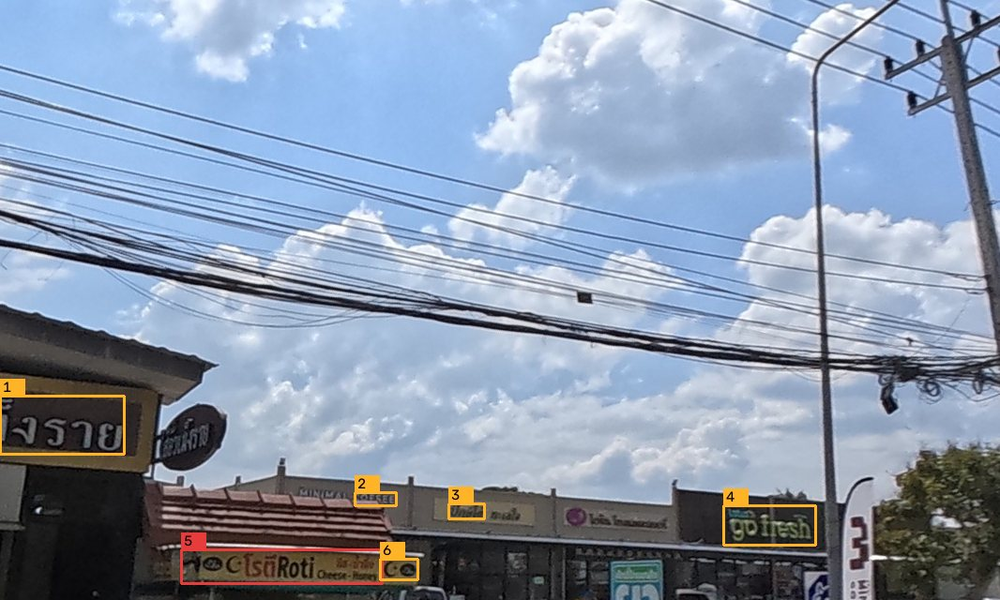
- งราย (0.5)
- MAISSEE (0.5)
- บัญได้ (0.5)
- go tresh (0.5)
- No GisตีRoti oece ta (0.3)
- Ce (0.5)
Scene labels on this tile: outdoor 0.98, sky 0.98, cloudy 0.94, blue_sky 0.89, cord 0.63
Settled, or cut out
A read that names a Mot Dang listing within 60 metres, with every other line read sure, is settled: no picture needed. Everything else becomes a crop, enlarged until each line of text is 26 pixels tall, and packed onto a sheet. This set: 3 settled, 72 sign crops, 17 scene crops.
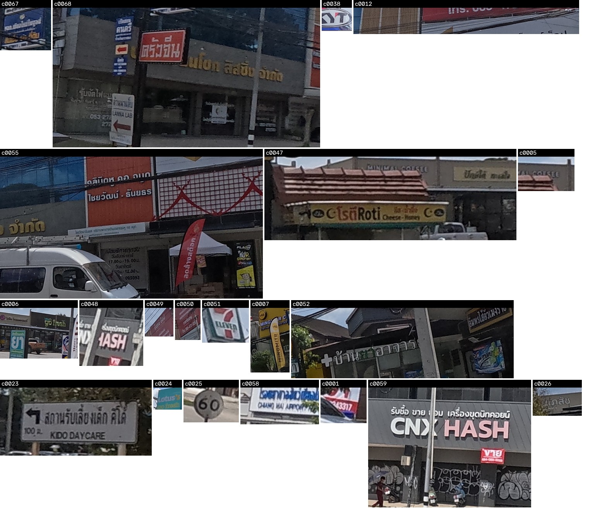
The start of the digest the model reads first
m000 GSAB2131_145..GSAB2131_145 (1) lead GSAB2131_145 14:01:44 18.763627,98.992999 sweep w001.jpg
near: cm-curated-paper-41945 Dezpax เดซแพค เชียงใหม่ แพคเกจจิ้งพิมพ์โลโก้ | cm-curated-box-shop บ็อกซ์ ช็อป | cm-osm-node-3810861068 มิ่งมิตร
c0067 GSAB2131_145 y-126 p16 t001.jpg :: เก้อไหมใน(0.30) / ที่ดับ(0.50)
c0068 GSAB2131_145 y-124 p6 t001.jpg :: ดานคร(0.50) / L E(0.30) / ตรงจน(0.50) / นโอก ลิสชิ้ง จำกัด(0.50) / รั้นจัดไฟแม่(0.50) / สามาแล้ง(0.30) / AIRA LAB(0.50) / 053-27E(1.00) / 202(0.50)
l0077 GSAB2131_145 y90 p3 graffiti 0.26 l001.jpg
c0038 GSAB2131_145 y112 p3 t001.jpg :: รบ(0.50)
l0076 GSAB2131_145 y135 p-22 clothing 0.82 l001.jpg
Sweep
Each spot also goes out as one low-resolution 360 strip. It shows where to look, not what a sign says, so the model can catch what no detector flagged: spirit houses, murals, wrapped transformer boxes, bikes parked in a row.
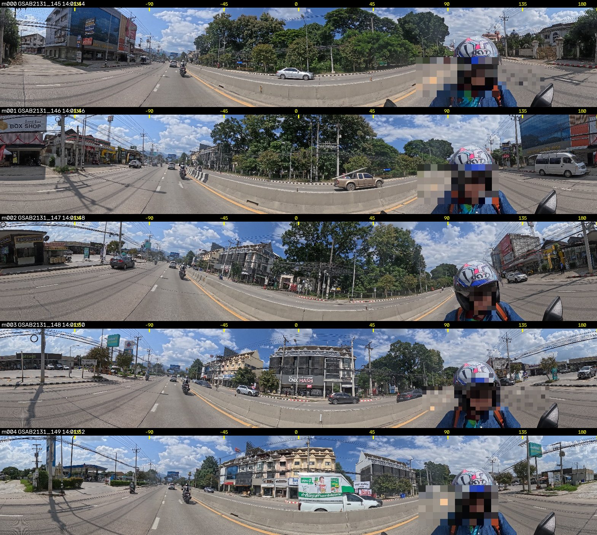
Zoom
When a crop leaves a doubt, the model asks for that exact direction at camera size, and can ask for the frames either side to pick the sharper one. The reader took 14 zooms on this set.
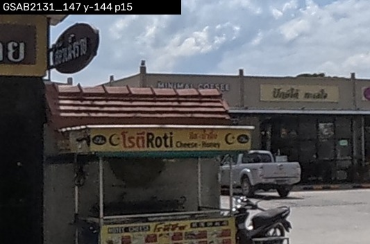
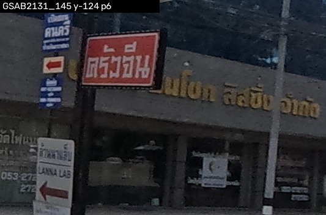
One reader, few turns
A model re-reads everything in its context on every turn, so turns cost more than pictures. The reader gets one batch: the digest, then every page at once, then every zoom at once, then one write. This run took 9 turns; the old reader of these frames took 138.
What it found
36 things written by the reader on these 12 frames. Pictures re-cut from the sphere where the reader pointed.
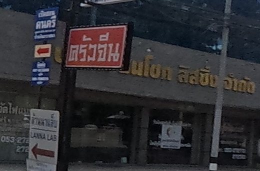
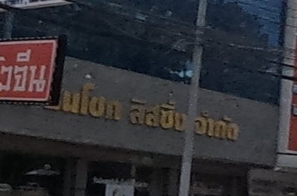
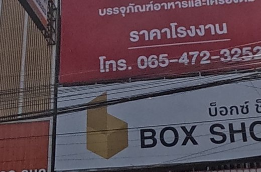
motdang: cm-curated-box-shop
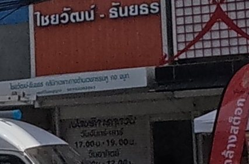
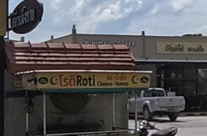
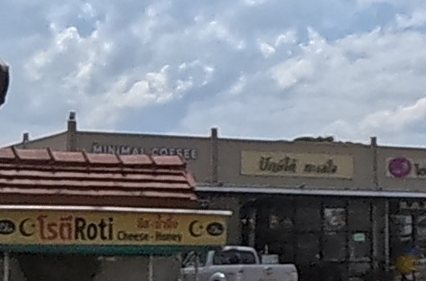
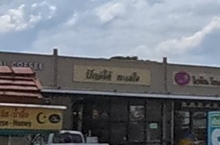
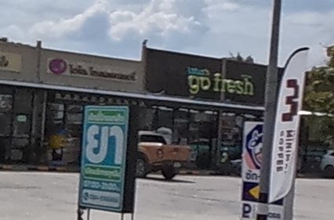
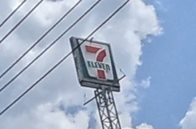
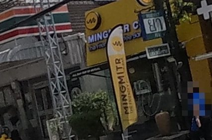
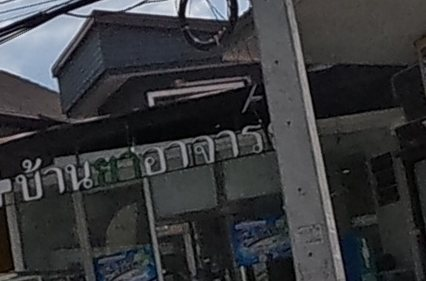
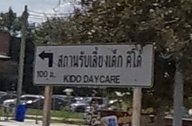
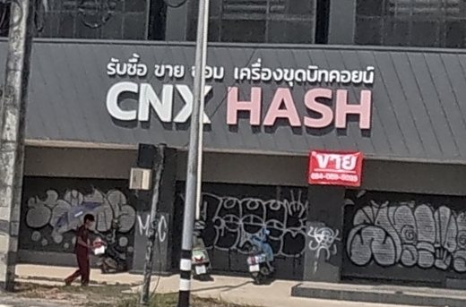
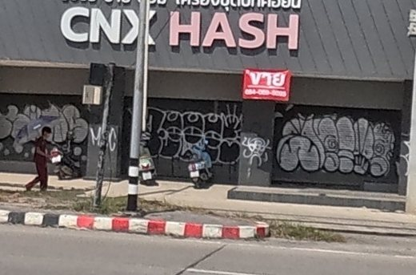
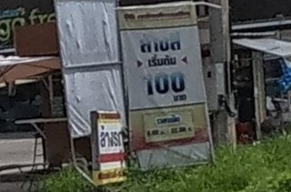
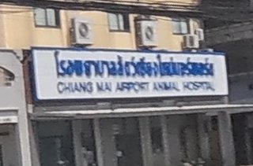
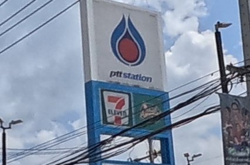
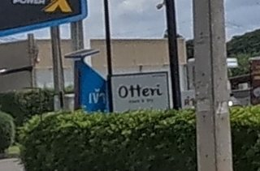
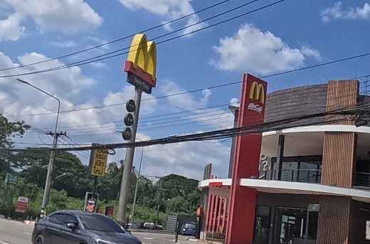
Against the old way
The same 12 frames were read on 23 Sep by the old method: contact sheets of four flat views per frame, opened whole. 34 named places then; 33 now. Both lists:
- 7-ELEVEN
- ATHENA
- CHIANG MAI AIRPORT ANIMAL HOSPITAL
- CNX HASH
- Customer Care
- DR.TAN CLINIC
- Lotus's go fresh
- MINGMITR
- MINIMAL COFFEE
- McDonald's
- Otteri
- Sleep Mai?
- THE ASTRA SKYRIVER
- beko
- ptt station
- กาญจน์กนกทาวน์ 5
- ครัวจีน
- คลินิกหู คอ จมูก ไชยวัฒน์ - ธันยธร
- คลินิกเด็ก
- บ็อกซ์ ช็อป
- ปักษ์ใต้ ทะเลใจ
- สตาร์เวฟ x ยูเมะ ไลฟ์ สตรีมมิง ฮับ
- สถานรับเลี้ยงเด็ก คิโด้
- สุขสวัสดิ์ @อ้อมเมือง
- อู่ วิทยาการ...
- เงินซิ่งได้
- เลอ ชามอนิกซ์
- โรตี Roti
- ไส้อั่วเม็งราย
- บริษัท ธนโชค ลิสซิ่ง จำกัด
- มาสด้าเชียงใหม่ สาขามหิดล
- ล้านนาแล็บ
- สตาร์ 3 เอวีนิว
- หม่าล่า ร้านโปรด
- อะไรซ์ คอนโดมิเนียม
- CHANGAN
- NIM EXPRESS
- ที่จอดรถ
- ร้านเล็กรุ่งโรจน์
Cost per frame
Tokens are the pieces a model reads; a picture costs about one token per 750 pixels. Counted from the readers' own records.
Try it
Needs a Mac (Apple Vision), Python with OpenCV, and ffmpeg. The code is in this repository under tool/.
python3 tool/nitpick.py prep out/ photos/ --prov cm python3 tool/nitpick.py cost out/ python3 tool/nitpick.py zoom out/ GSAB2131_147 -162 19 --fov 20 --n 1